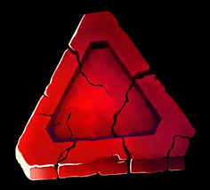

Dead by Daylight is an online asymmetric multiplayer survival horror video game developed and published by
Canadian studio Behaviour Interactive.
Dead by Daylight also refered too as DBD features many DLC from some of your favorite horror franchises
Dead by Daylight is a game where 4 survivors team up to try and escape from one killer in a trial.
Survivors and Killers are introduced through DBD Chapters which come around every 3 months. A chapter can feature one killer and one survivor,
or it can have just a survivor or just a killer. So chapters come with one killer and 2 survivors like the Stranger Things chapter and the Resident Evil chapter.
Survivor
Dead By Daylight can be described as a deadly game of hide and seek.
In dead by daylight you can play as a survivor or a killer.
Each role has a different objective.
As survivor you must complete 5 of 7 generators that are scattered around the various maps of to power the exit gates that you have to open to escape the trial.
Each survivor has 3 unique perks but can also access a wide range of other survivors perks
To learn more about Survivor perks visit Survivor Perks
Killer
As Killer your goal is to sacrafice all survivors in the trial to the entity by any means necessary. You have to hook all survivors on
the sacraficial hooks provided on the map.
In Dead by Daylight each trial takes place in a unique realm that features pallets and windows and other items
for more about Maps visit The Maps of DBD
Dead by Daylight also features fun and interactive gamemodes and events that come out every once in a while
If you want to learn about the different gamemodes visit DBD Gamemodes
Prestiging and the bloodweb
Survivors and Killers can access other perks within their role through the prestige and bloodweb system
For more about Prestiging and the Bloodweb visit Prestige and Bloodweb
In Dead by Daylight the Bloodweb is where you get all your items, add-ons, perks and perk level ups, and offerings.
With the Bloodweb comes prestiging. Once your Bloodweb reaches level 50 you can spend 20,000 Bloodpoints to level up by 1 prestige level. The maximum prestige level you can reach on a character is p100.
Leveling up a prestige level unlocks a survivors or killers teachable perks to all other survivors and killers that you own. If you continue to level up the Prestige level it will then upgrade that perk
Custom Games
As a player you have access to Custom Games.
In Custom Games players have access too all perks in the game and unlimited offerings and items.
You need atleast 2 or more players or bots that u can add and give items and perks too to start the custom game.
In-game Currencies
Dead by Daylight features different types of in game currencies all with their own purpose

Bloodpoints
You use bloodpoints to level up the bloodweb for different survivors and killers
You earn bloodpoints from playing matches, challenges , the Rift pass and events
Irisdescent Shards
Free currency you earn by leveling up your account
You can use Iridescent Shards to by none licesned survivors and killers, cosemetics and Shrine of Secret Perks
Auric Cells
Dead by Daylights Paid currency
Used to buy cosmetics, characters that are licensed or original and The Rift pass
Shrine of Secrets
The Shrine of Secrets is a way for any player to get teachable perks from any survivor or killer
The Shrine of Secrets resets every tuesday and it brings 2 killers perks and 2 survivors perks.
To purchase the perks you buy them with Iridescent Shards
Rift Pass
The Rift Pass is Dead by Daylights version of a battlepass
It features cosmetics for survivors and killers, Bloodpoints and other types of in game currecies
There are 100 Rift pass tiers and to progress you need to collect Rift Fragments you earn from quests and playing the game